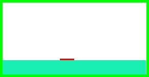
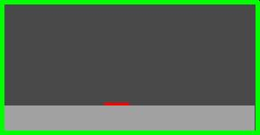
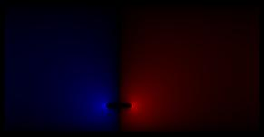
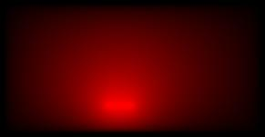

pcb.bmp Er= MIXED C= 94.2540 pF/m L= 387.2186 nH/m Zo= 64.0956 Ohms v= 1.65528e+
08 m/sv_f= 0.5521 VERSION=3.0.101010010
00101010
00011101
00001111
11110010
00000001
11111110atlc reads a bitmap file, such as pcb.bmp After running atlc
% atlc pcb.bmp
atlc will produce:
atlc to suppress the production of the .bmp files and the -S option can be used to suppress the generation of the .bin files. You might well wish to use both options nearly all the time, as writing these files take a few seconds and for the case of 2 conductor lines, takes up about 9x as much disk space as the original bitmap. For 3 conductor lines, the files produced take up about 27 times the disk space of the original bitmap. atlc is run in exactly the same way for 2 or 3 conductor transmission lines. The filename must always be supplied and the same options
(-C, -s, -S, -v, -c, -d, -i, -r or -t) can always be used.
Files produced by atlc for 2 conductor transmission lines.
% atlc pcb.bmp
you will have the following files.
|  |  |  |
| pcb.bmp Original microstrip enclosed in a box. Note the thin red inner conductor, the green outer conductor, the white vacuum and the turquoise dielectric (Er=4.8). | pcb.Er.bmp Permittivity diagram. This shows the permittivity as a grayscale - lighter for increasing permittivity. The conductors are shown red, green and blue, +1 V is shown red, 0V green and -1V blue. | pcb.Ex.bmp x-directed electric field. Blue is negative, Red is positive. Recall Ex=-dV/dx. |
|
|
 |
| pcb.Ey.bmp y-directed electric field. Blue is negative, Red is positive. Recall Ey=-dV/dy. | pcb.E.bmp Magnitude of the electric field. E=Ex2+Ey2. Shown lighter for increasing E-field. | pcb.V.bmp Voltage field. Red is shown positive, black as no voltage and negative voltages would be shown as blue. |
pcb.bmp Er= MIXED C= 94.2540 pF/m L= 387.2186 nH/m Zo= 64.0956 Ohms v= 1.65528e+
08 m/sv_f= 0.5521 VERSION=3.0.1 |
01010010 |
|
| pcb.U.bmp Energy. Since E=0.5 C V2, this is proportional to capacitance (and hence Er) and the E-field on a pixel | The stadnard output shows all the results from the simulation on one line. | pcb.Er.bin, pcb.Ex.bin, pcb.Ey.bin, pb.E.bin, pcb.V.bin and pcbU.bin Six binary files have the same data as the bitmaps, but in a quantitative manner. |
The bitmap files do not show quantitative data - i.e. the numbers are optimised to look okay, rather than to be scientifically rigorous.
The binary files show similar data to the bitmaps, but in a more scientific way. They show the electric field in volts/pixel (.Ex.bmp, .Ey.bmp and .E.bmp) and voltage (.V.bmp) assuming one conductor is earthed to 0v (the green one) and the other is at +1V (the red one). If your two conductors have a real voltage difference of V between them, the data file shows a value of E_data V/m, the dimensions of your transmission line are X mm across and the number of pixels in the x-direction allocated for the transmission line is N, then the true field strength that will be achieved in practice is E_real=E_data * N / X (V/mm)
The -s option can be used on atlc to suppress the production of the .bmp files and the -S option can be used to suppress the generation of the .bin files.
atlc is written and supported by Dr. David Kirkby (G8WRB) It is issued under the GNU General Public License
{kind=link}